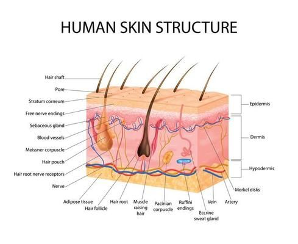

Get Instant Skin Cancer Detection
Upload a skin image and receive immediate results on whether it is cancerous or not.



How It Works
A smooth, secure, and AI-powered experience at every step.
Upload Your Image
Drag & drop or select an image of your skin concern. We support all popular image formats securely.
AI Analysis Begins
Our deep-learning model examines your image using real medical data to identify potential risks.
Get Your Results
Instantly receive a detailed report with risk insights, confidence scores, and suggested next actions.
Why Choose SkinDetect?
Every feature is built to empower and protect you.
1. Early Detection Saves Lives
SkinDetect uses cutting-edge AI to analyze skin images for early signs of cancer, increasing the chances of successful treatment.
2. Instant Results
Get analysis in seconds — no waiting for appointments or lab results.
3. Completely Private & Secure
All images are analyzed locally or securely encrypted. Your data stays yours.
4. No Medical Expertise Needed
Simple drag & drop interface. Anyone can use it — no technical or medical background required.
5. Accessible Anywhere, Anytime
Whether on mobile or desktop, SkinDetect is optimized for speed and usability on all devices.
6. Trusted AI Model
Trained on thousands of real medical images by dermatology professionals and validated by experts.
7. Visual Risk Assessment
Get clear, color-coded feedback and percentage confidence levels for easy understanding.
8. No App Download Required
100% web-based. Just open your browser and start.
9. Follow-up Guidance
SkinDetect provides recommended next steps — whether it’s monitoring, visiting a dermatologist, or further testing.
10. Peace of Mind
Quickly rule out concerns or catch issues early — either way, you’re empowered with knowledge.